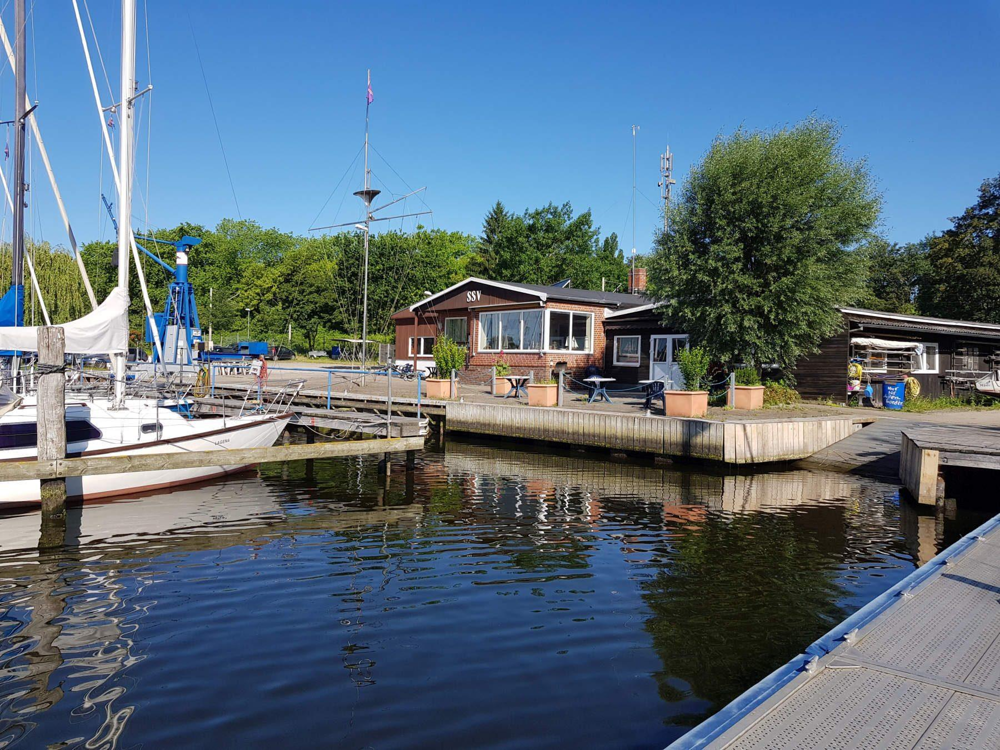

Schwartauer Segler-Verein e.V. · Teerhofinsel Lübeck
Gemeinsam segeln an der Trave.
53°54'41" N · 10°42'04" O
Segeln ist bei uns kein Schaulaufen –
sondern Gemeinschaft.
Aktuelles
Neues aus dem Verein.

Unser Verein
Geringe Kosten,
viele Hände.
Wir halten die Kosten für alle bewusst niedrig – unser Hobby soll kein Schaulaufen der Zahlungskräftigsten werden. Das funktioniert, weil wir möglichst viele Aufgaben selbst übernehmen: Arbeitsdienste, Gartenarbeit, kleine Malerarbeiten, Wartung der Anlagen, Veranstaltungen und die Jugendgruppe.
Leistet jeder seinen kleinen Teil, sind das oft nur zwei Wochenenden und ein paar Stunden im Jahr. Dann bleibt für alle genug Zeit zum Segeln.

Jugend
Segeln lernen –
der Spaß zuerst.
Ab etwa sechs Jahren lernen Kinder bei uns auf vereinseigenen Booten segeln: erst im Optimisten, später im Team auf der Piratenjolle. Erfahrene Trainer und Sicherungsboote sind immer dabei.
Bis bald
Wir freuen uns auf euren Besuch.
Fragen zu Mitgliedschaft oder Liegeplatz? Am schnellsten per E-Mail – oder einfach vorbeikommen.